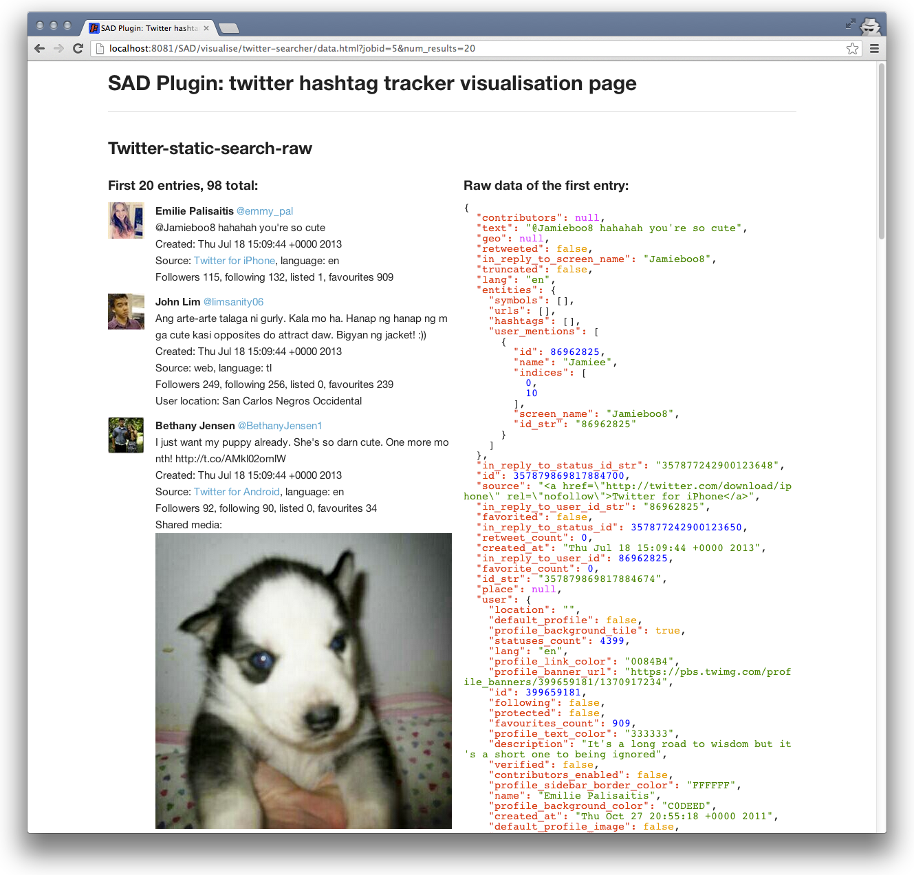

Plugin development¶
Overview¶
SAD plugins are executable java libraries launched by the SAD service according to incoming requests. The following diagram illustrates access to Social Networks using plugins:
{kind=link}
Plugin launch request is received by SAD service and based on the parameters, a plugin is scheduled for execution. Request parameters can be split in two parts (see Using SAD Control panel for more details):
- Execution configuration:
{ "pluginName": "twitter-searcher", "arguments": [ { "search_terms": "football" }, { "num_posts": "99" } ], "inputs": [], "outputs": [ { "type": "twitter-static-search-raw" } ] }The code above tells the service to launch plugin twitter-searcher and pass it two arguments: search_terms and num_posts. It also requests that the plugin outputs data of type twitter-static-search-raw.
- Execution schedule:
"schedule": { "times": 2, "withIntervalInMilliseconds": 20000 }The code above schedules the plugin to be run twice with 20 second interval.
Both parts of the request are saved in the database and the plugin is launched using Quartz scheduler. SAD Plugin executable has full access to the service’s database which allows it to retrieve arguments, input and output parameters, and save own data.
Plugins must be located in the folder set in plugins/path part of the service configuration file sad.properties and follow a simple file structure detailed in the following section.
File Structure¶
Three parts constitue a SAD plugin:
- Configuration file configuration.json.
{ "enabled": "y", "name": "basic-sns-stats", "description": "Basic Social Network posts analytics plugin. Extracts basics stats from collections of tweets or Facebook posts", "paths": { "jar": "target/basic-sns-stats-2.6.jar", "dependenciesFolder": "target/lib" }, "arguments": [ { "name": "num_posts", "description": "Number of social network posts per social network to analyse", "isOptional": true, "defaultValue": "all", "sample_values": "all|125" } ], "inputs": [ { "source": "job_id", "defaultValue": "1", "required_data_types": [ { "twitter-static-search-raw": "JSON Twitter posts as returned by Twitter API" }, { "facebook-posts-raw": "JSON Facebook posts as returned by Facebook API" }, ] }, { "source": "plugin_name", "defaultValue": "twitter-searcher", "required_data_types": [ { "twitter-static-search-raw": "JSON Twitter posts as returned by Twitter API" }, { "facebook-posts-raw": "JSON Facebook posts as returned by Facebook API" }, ] } ], "outputs": { "data": [ { "type": "twitter-basic-stats", "description": "JSON containing basic stats extracted from processed tweets" }, { "type": "twitter-static-search-raw", "description": "JSON containing tweets used in the analysis" }, { "type": "facebook-basic-stats", "description": "JSON containing basic stats extracted from processed Facebook posts" }, { "type": "facebook-posts-raw", "description": "JSON containing Facebook posts used in the analysis" } ] } }All fields are required, apart from values of
arguments,inputsandoutputs. Each argument entry must have name, description, isOptional flag, default value and one or more sample values.Arguments describe what arguments can be passed to the plugin execution and what sort of values are expected.
Inputs define if the plugin accepts data from individual plugin executions (jobs) using
job_idor all data create by a plugin withplugin_name.Outputs describe what data can be saved by the plugin in the database and give an option to select only required data types (see Data types) when the plugin is run.
- Java executable. Must be located as specified in
path/jarconfiguration setting:
"paths": { "jar": "target/twitter-searcher-2.6.jar"
- Folder with dependencies. Must be located as specified in
path/dependenciesFolderconfiguration setting:
"paths": { "dependenciesFolder": "target/lib"
SAD service also supports custom HTML/CSS/JS visualisations of the data collected by plugins:
{kind=link}
This is achieved by placing data.html file into the visualise/<plugin name> folder on the service:
webapps/visualise/<plugin name>
All sample SAD plugins come with a visualisation that can be used as a template and is located in:
<plugin folder>/src/main/resources/visualise
For sample plugins the data.html file with the help of javascript (javascript/data.js) requests data for a SAD job from the SAD service and display limited number of results according to URL parameters:
?jobid=1&num_results=20
The layout of data.html can be fully customised using HTML, CSS and javascript.
Code structure¶
SAD plugin code is expected to go through the following steps (without ECC integration):
- Get argument values of the execution.
- Get input data (if any).
- Do something with that input data according to the arguments: any Java code.
- Get requested output types.
- Save output data to the database as requested.
- Report successful execution.
To assist with all those steps a PluginsHelper class can be used. For example, twitter-searcher plugin’s code is the following:
- Initialise PluginsHelper class and get hold of arguments:
// Always get Plugins helper first PluginsHelper ph = new PluginsHelper(args); // Retrieve argument "search_terms" String search_terms = ph.getArgumentValue("search_terms"); // Retrieve argument "num_posts" String num_posts = ph.getArgumentValue("num_posts");
- Since no input data is required, search Twitter for
search_termsand only requestnum_poststweets:
// Initialise Social Integrator AuthProvider ap = initialiseSocialIntegratorForTwitter("oauth-twitter.properties"); // Run Twitter search List<Message> tweets = searchTwitter(ap, search_terms, num_posts, since_id);
- Get hold of requested output types (see Data types) and save tweets if needed:
// Check requested output types ArrayList<String> requestedOutputTypes = ph.getRequestedOutputTypes(); // Save tweets to the database if requested if (requestedOutputTypes.contains("twitter-static-search-raw")) { Timestamp whenCollected = new Timestamp(System.currentTimeMillis()); for (Message tweet : tweets) { logger.debug("Saving tweet [" + tweet.getId() + "]: " + tweet.getMessage()); ph.saveData("twitter-static-search-raw", tweet.getJson(), whenCollected); } }
- Report success:
// Report success - failure reported automatically ph.reportExecutionSuccess(); System.exit (0);
In order to avoid duplicates when searching Twitter multiple times, a since_id parameter can be exchanged between job executions. For example, schedule:
"schedule": { "times": 2, "withIntervalInMilliseconds": 20000 }
will create two executions of one job. In order to avoid duplicate tweets, the first job will set since_id value:
// Save new sinceID if (tweets.size() > 0) { ph.putMetadataValueForKey("since_id", tweets.get(0).getId()); }
for the second execution to find and use:
// Get last found tweet ID from metadata (to avoid getting duplicate tweets in multiple executions), can be null String since_id = ph.getMetadataValueForKey("since_id");
If ECC integration is enabled, plugin’s metric model (see ECC integration: SAD Plugins) has to be defined in method:
PluginEccClient.defineExperimentMetrics()
PluginHelper’s methods:
public void addAttribute(String entityName, String attributeName, String description, String type, String unit) public void sendMetric(String entityName, String attributeName, String value)
can be used to report measurements or extend existing metric model dynamically.
For more details, please have a look at sample plugins code and PluginsHelper class in the SAD service javadocs.
Direct access to Mongo Database¶
PluginHelper provides access to Mongo’s collections via SAD Coordinator class that has the following convenience methods to interact with Mongo Database:
public Datastore getDatastore(); // returns the database public DBCollection getDBCollection(String name); // returns collection by name public void deleteDatabase(); // deletes current database public <T> Query<T> createQuery(Class<T> type); // creates custom queries public <T> Key<T> saveObject(T object); // saves objects to the database
To access SAD Coordinator from SAD plugin code, use:
public Coordinator getCoordinator();
To get direct access to the Data collection (collection used by SAD plugins to store all output data), use:
public DBCollection getDataCollection();
Once you have the collection object, use Mongo Java API to build database queries. To start with a query limiting data to the input data given to the current plugin execution, use PluginHelper’s method:
public BasicDBObject getInputDataQuery();
As an example of Mongo database access, here is a walkthough basic-sns-stat’s plugin code that uses Mongo to:
- Count tweets, Facebook posts
- Count tweets in English
- Find media files and descriptions
in input data.
First, get the Data collection and input data query:
DBCollection collection = ph.getDataCollection(); // database collection with all the data BasicDBObject inputDataQuery = ph.getInputDataQuery(); // query that limits data to input jobs/plugins
Clone the input data query and expand it to only include data entries of type “twitter-static-search-raw” (tweets), then count the number of the results:
BasicDBObject tweetsQuery = (BasicDBObject) inputDataQuery.copy(); tweetsQuery.append("dataType", "twitter-static-search-raw"); // initial query expanded to limit data by dataType logger.debug("Tweets: " + collection.find(tweetsQuery).count());
Similarly, count Facebook posts in input data:
BasicDBObject fbPostsQuery = (BasicDBObject) inputDataQuery.copy(); fbPostsQuery.append("dataType", "facebook-posts-raw"); logger.debug("FB posts: " + collection.find(fbPostsQuery).count());
Count number of tweets with ‘lang’ = ‘en’ (Facebook posts don’t have that field) in input data:
BasicDBObject englishTweetsQuery = (BasicDBObject) inputDataQuery.copy(); englishTweetsQuery.append("jsonData.lang", "en"); logger.debug("Tweets in English: " + collection.find(englishTweetsQuery).count());
To find tweets with media files in them, reuse existing tweets-only query by requiring ‘media’ field to exist:
tweetsQuery.append("jsonData.entities.media", new BasicDBObject("$exists", true));
Then, create a new object describing which data fields we need the query to return (we will only need the URL link to the media file and text of the tweet):
BasicDBObject keysToReturn = new BasicDBObject(); keysToReturn.append("jsonData.text", 1); keysToReturn.append("jsonData.entities.media.media_url", 1);
Using tweetsQuery and keysToReturn objects we query the database, convert each returned data entry to JSONObject (for convenience), and extract URLs and corresponding descriptions:
DBCursor cursor = collection.find(tweetsQuery, keysToReturn); JSONObject next; String text, media_url; while(cursor.hasNext()) { next = JSONObject.fromObject(cursor.next().toString()); text = next.getJSONObject("jsonData").getString("text"); media_url = next.getJSONObject("jsonData").getJSONObject("entities").getJSONArray("media").getJSONObject(0).getString("media_url"); logger.debug(media_url + " (" + text + ")"); }
Facebook post’s structure is slightly different, so exactly the same task can be accomplished like so:
fbPostsQuery.append("jsonData.picture", new BasicDBObject("$exists", true)); keysToReturn = new BasicDBObject(); keysToReturn.append("jsonData.message", 1); keysToReturn.append("jsonData.story", 1); keysToReturn.append("jsonData.name", 1); keysToReturn.append("jsonData.picture", 1); cursor = collection.find(fbPostsQuery, keysToReturn); while(cursor.hasNext()) { next = JSONObject.fromObject(cursor.next().toString()); if (next.getJSONObject("jsonData").containsKey("message")) { text = next.getJSONObject("jsonData").getString("message"); } else { if (next.getJSONObject("jsonData").containsKey("name")) { text = next.getJSONObject("jsonData").getString("name"); } else { if (next.getJSONObject("jsonData").containsKey("story")) { text = next.getJSONObject("jsonData").getString("story"); } else { text = "no description"; } } } media_url = next.getJSONObject("jsonData").getString("picture"); logger.debug(media_url + " (" + text + ")"); }
Detailed reference: http://docs.mongodb.org/manual/reference/
Mongo Java API: http://api.mongodb.org/java/current/index.html